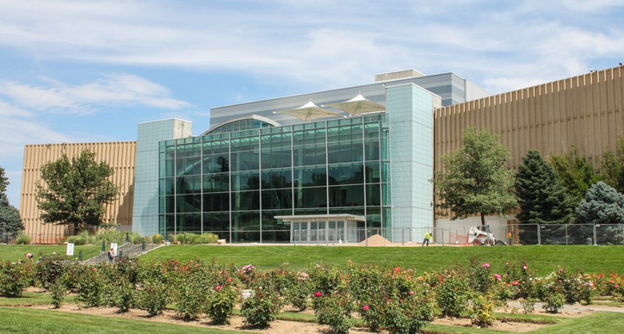
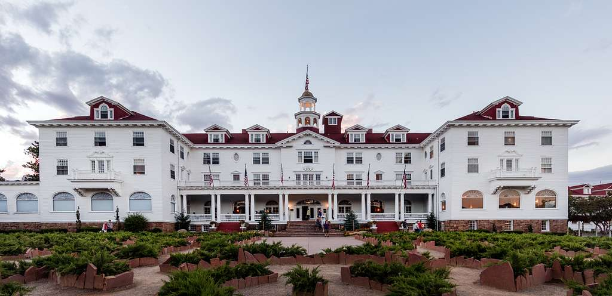

Indoor Activities
The Denver Museum of Nature and Science
For the outdoorsy type of people, Colorado is a dream come true. That's not to say, however, that there isn't plenty of fun things to do indoors as well. In Denver, there's the Denver Museum of Nature and Science. The museum is 716,000 square feet, and has many award-winning exhibits of gemstones, mummies, dinosaur fossils, and multiple exhibits for local and foreign wildlife. There's also a “Space Odyssey” section, presenting all sorts of interesting exhibits about the universe around us and has on display a life-size replica of a Mars Exploration Rover.
The Stanley Hotel
In Estes Park (between Fort Collins and Boulder) there's the Stanley Hotel, famous for its spooky reputation as the inspiration for the novel and film adaptation of “The Shining” by Stephen King. The hotel features a daytime tour for history buffs, and a nighttime tour for fanatics of the paranormal. If neither of those options interest you, the town of Estes Park below has plenty of local shops and other, more cozy places to stay.

Cave of The Winds
A fascinating place to visit that's out of the elements but isn't much warmer is Cave of the Winds, near Manitou Springs. At a near constant 54 degrees, this massive underground cave formation boasts thousands upon thousands of stalactites and stalagmites as well as a plethora of other rare natural formations that appear to defy gravity. There are walking tours of the caves that range from 30-45 minutes to over 2 1/2 hours.